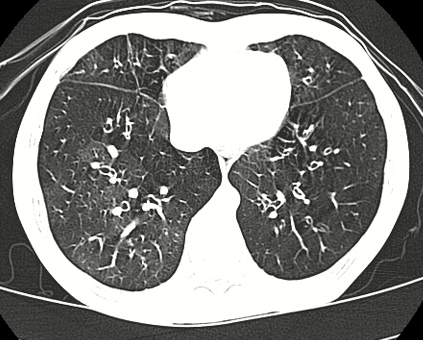

Ficha del catálogo
Bronquiolitis obliterante y patrón en mosaico
- Sistema
- Respiratorio
- Modalidad
- TC
- Región
- Tórax
- Dificultad
- Avanzado
Enfermedad de la vía aérea pequeña en la que el tejido cicatricial estrecha y oblitera la luz de los bronquiolos, con obstrucción fija al flujo aéreo. Aparece tras infecciones, tras trasplante de pulmón o de médula ósea, en enfermedades del tejido conjuntivo y por inhalación de tóxicos. La tomografía en espiración es imprescindible porque el estudio en inspiración puede parecer casi normal.
Técnica
Tomografía de alta resolución en inspiración máxima y en espiración forzada, sin contraste, con reconstrucciones de cortes finos.
Qué observar
- Atenuación en mosaico con áreas claras y oscuras de límites lobulillares
- Vasos de menor calibre dentro de las zonas hipodensas
- Acentuación clara de las diferencias en la serie espiratoria
- Bronquiectasias y engrosamiento de las paredes bronquiales
- Ausencia de fibrosis reticular y de panalización
- Pulmón hiperclaro y de menor tamaño en las formas posinfecciosas unilaterales
Hallazgos
Mosaico de atenuación con vasos adelgazados en las zonas hipodensas y atrapamiento aéreo evidente en espiración.
Perlas
El calibre de los vasos separa las causas del mosaico. Si los vasos son pequeños dentro de la zona oscura, el problema es la vía aérea, y si son grandes en la zona densa, se trata de vidrio deslustrado o de causa vascular.
Diagnóstico diferencial
- Enfermedad vascular pulmonar crónica
- Mosaico sin atrapamiento en espiración y con arterias centrales dilatadas.
- Neumonitis por hipersensibilidad
- Nódulos centrolobulillares mal definidos junto al atrapamiento.
- Enfisema
- Destrucción parenquimatosa con áreas sin pared y sin límites lobulillares.
Simuladores
- Espiración involuntaria durante la adquisición en inspiración
- Atelectasias declives que crean falsa heterogeneidad
- Zonas de atrapamiento fisiológico en bases y língula
Por modalidad
- RX
- Puede ser normal o mostrar hiperinsuflación inespecífica
- TC
- Demuestra el atrapamiento aéreo y es la técnica de elección
Protocolo
Alta resolución en inspiración y espiración forzada, con instrucciones claras de respiración y comparación entre ambas series.
Clasificación
Errores frecuentes
- No realizar serie espiratoria y dar el estudio por normal
- Confundir el mosaico vascular con el mosaico por vía aérea
- Atribuir a fibrosis las bronquiectasias que en realidad son por tracción de la vía aérea pequeña

bronquiolitis obliterante mosaico atrapamiento aereo via aerea pequena espiracion